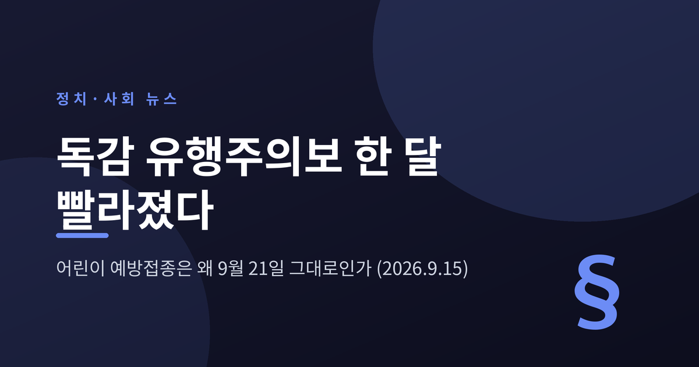
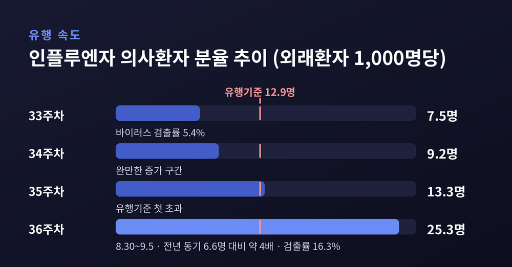
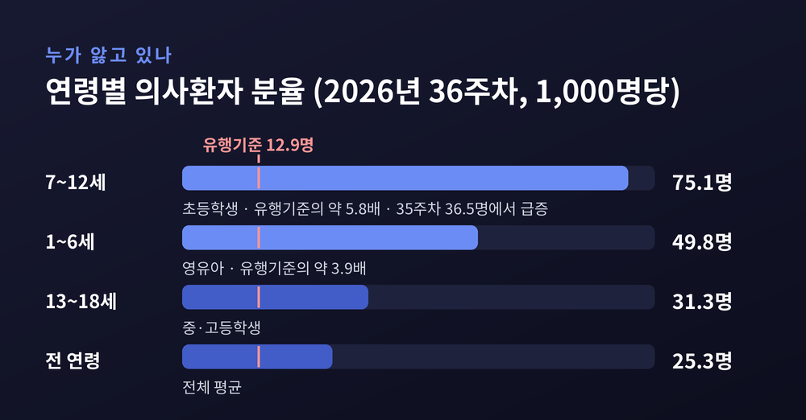
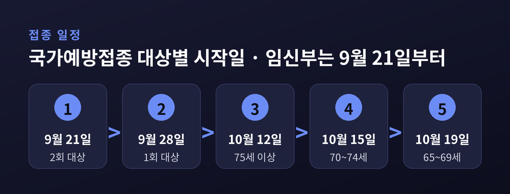
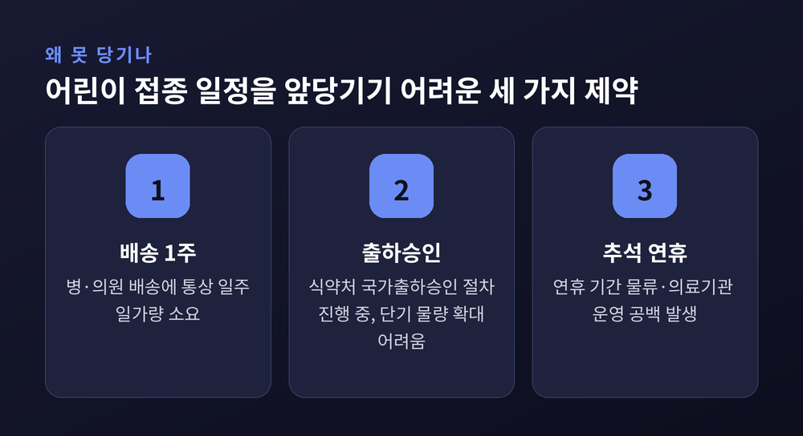
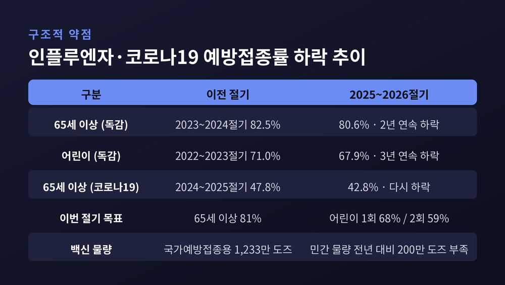

독감 유행주의보 한 달 빨라졌는데 어린이 예방접종은 왜 그대로일까

오늘은 2026년 9월 국내 방역의 최대 현안이 된 인플루엔자 유행주의보 조기 발령을 정리해 보겠습니다. 유행은 예년보다 한 달 이상 빨리 왔는데, 국가예방접종 일정은 그만큼 빨라지지 못했습니다. 그 간극이 왜 생겼는지, 무엇이 걸려 있는지 짚어보려 합니다.
- 질병관리청이 2026년 9월 11일 0시부로 인플루엔자 유행주의보를 발령했습니다. 직전 절기(2025년 10월 17일)보다 한 달 이상 빠릅니다.
- 어린이 국가예방접종은 원래 계획대로 9월 21일 시작될 가능성이 큽니다. 앞당겨진 것이 아니라, 앞당기지 못한 것입니다.
- 백신 배송 기간과 국가출하승인 절차, 추석 연휴가 겹친 탓입니다. 대신 65세 이상 어르신 접종을 10월 초로 당기는 방안이 검토되고 있습니다.
절기가 시작되자마자 나온 유행주의보
질병관리청은 2026년 9월 11일 0시부로 2026~2027절기 인플루엔자 유행주의보를 발령했습니다.
국내에서 독감은 통상 11월께부터 유행합니다. 직전 절기에는 2025년 10월 17일에 유행주의보가 나왔습니다. 이번에는 그보다 한 달 이상 빠릅니다.
더 눈여겨볼 대목은 시점의 상징성입니다. 인플루엔자는 매년 36주차부터 이듬해 35주차까지를 한 절기로 셉니다. 이번 유행주의보는 절기가 시작되는 바로 그 첫 주에 나왔습니다. 시즌이 열리자마자 경보가 울린 셈입니다.
유행주의보는 아무 때나 내려지지 않습니다. 인플루엔자 의사환자 분율이 해당 절기 유행기준을 넘고, 동시에 바이러스 검출률이 5% 이상일 때 전문가 자문을 거쳐 발령됩니다. 두 조건이 모두 충족됐다는 뜻입니다.

숫자가 말하는 것 — 4주 만에 3배
36주차(8월 30일~9월 5일) 인플루엔자 의사환자 분율은 외래환자 1,000명당 25.3명이었습니다.
이번 절기 유행기준은 12.9명입니다. 기준의 약 두 배를 한 번에 넘어섰습니다.
흐름을 따라가면 속도가 더 선명합니다. 33주 7.5명, 34주 9.2명, 35주 13.3명, 그리고 36주 25.3명. 4주 만에 3배 이상 늘었습니다. 지난해 같은 기간은 6.6명이었습니다. 약 네 배 수준입니다.
바이러스 검출률도 33주 5.4%에서 36주 16.3%로 올랐습니다. 감시 지표가 한 방향을 가리키고 있습니다.
입원 통계는 더 무겁습니다. 36주차 병원급 표본의료기관 입원환자는 300명으로, 전주 166명의 약 두 배였습니다. 전년 동기간 23명과 비교하면 열 배가 넘습니다.
유행은 교실에서, 위험은 병실에서
이번 유행의 성격을 가장 잘 보여주는 것은 연령별 통계입니다.
36주차 기준 7~12세 초등학생의 의사환자 분율은 1,000명당 75.1명이었습니다. 유행기준 12.9명의 약 5.8배입니다. 1~6세 영유아가 49.8명, 13~18세가 31.3명으로 뒤를 이었습니다.
개학과 유행 시작이 맞물린 결과입니다. 35주차만 해도 7~12세는 36.5명이었습니다. 한 주 만에 두 배 넘게 뛴 것입니다.
그런데 입원환자 구성은 정반대입니다. 36주차 입원환자 300명 가운데 65세 이상이 60.0%를 차지했습니다.
유행을 끌고 가는 연령과 중증 부담을 지는 연령이 다릅니다. 이 어긋남이 이번 사안의 핵심입니다. 아이들 사이에서 퍼진 바이러스가 가정과 지역사회를 거쳐 고령층에게 도달하는 구조이기 때문입니다.
추석 연휴가 곧 다가온다는 점도 방역당국이 긴장하는 이유입니다. 온 가족이 모이는 시기는 호흡기감염병이 세대를 건너뛰기 가장 좋은 조건이기도 합니다.

"앞당겨졌다"는 말의 오해
여기서 사실관계를 한 번 정리하고 넘어가야 합니다.
9월 21일이라는 날짜를 두고 '앞당겨졌다'는 설명이 돌지만, 정확하지 않습니다. 9월 21일은 질병관리청이 2026년 8월 25일에 이미 발표해 둔 원래 계획일입니다. 유행주의보가 나오기 보름 이상 전에 정해진 일정입니다.
2026~2027절기 국가예방접종 일정은 이렇게 짜여 있었습니다. 9월 21일 2회 접종 대상 어린이와 임신부, 9월 28일 1회 접종 대상 어린이, 10월 12일 75세 이상, 10월 15일 70~74세, 10월 19일 65~69세.
지원 대상은 생후 6개월~14세 어린이와 임신부, 65세 이상 어르신입니다. 이번 절기부터 무료 접종 대상이 13세 이하에서 14세 이하로 확대됐습니다. 학령기 청소년의 감염과 학교 내 집단 확산을 줄이겠다는 취지입니다. 대상 출생일은 2012년 1월 1일부터 2026년 8월 31일까지입니다.
접종은 주소지와 관계없이 가까운 위탁의료기관이나 보건소에서 받을 수 있습니다. 전국 위탁의료기관은 약 2만 3,000개소입니다. 사용되는 백신은 세계보건기구 권고에 따른 3가 백신입니다.

그래서 실제로 무엇이 달라지나
질병관리청은 9월 14일 브리핑에서 대상별 접종 일정 조정을 검토하고 있다고 밝혔습니다.
다만 조정의 방향은 '전체를 당긴다'가 아닙니다. 대상마다 다릅니다.
복수 언론 취재를 종합하면, 어린이 접종은 기존 일정이 유지될 가능성이 큽니다. 대신 아직 한 달가량 여유가 있는 65세 이상 어르신 접종을 10월 초로 최대 2주 앞당기는 방안이 추진되는 것으로 전해집니다. 구체적 일정은 지자체와 의료계 의견 수렴을 거쳐 이르면 9월 16일 발표될 예정이었습니다.
이 글을 쓰는 9월 15일 현재, 최종안은 아직 공식 발표되지 않았습니다. 질병관리청은 "정부안을 마련하면 안내할 예정"이라는 입장입니다. 따라서 아래 내용은 확정이 아니라 현재까지 확인된 방향으로 읽어주시면 좋겠습니다.
한 가지 예외는 이미 정해졌습니다. 요양병원과 요양시설은 연령별 접종 일정과 관계없이, 지역사회 유행 상황에 따라 백신 공급 시점부터 접종할 수 있도록 허용됩니다.
어린이 접종을 당기지 못한 세 가지 이유
가장 많이 아픈 연령의 접종을 왜 앞당기지 못할까요. 이유는 의지가 아니라 물류에 있습니다.
첫째, 배송입니다. 백신이 병·의원에 도착하는 데 통상 1주일가량 걸립니다. 유행주의보가 나온 9월 11일 기준으로 어린이 접종 시작까지 남은 시간은 열흘 남짓이었습니다.
둘째, 국가출하승인입니다. 백신은 생산됐다고 바로 유통되지 않습니다. 식품의약품안전처의 품질 확인 절차를 거쳐야 합니다. 업계는 승인 절차가 아직 진행 중이어서 단기간에 어린이용 물량을 크게 늘리기는 어렵다고 설명합니다.
셋째, 추석 연휴입니다. 연휴 기간에는 물류와 의료기관 운영에 공백이 생깁니다.

더 깊은 문제 — 떨어지는 접종률과 빠듯한 민간 물량
일정보다 구조가 더 어려운 대목일 수 있습니다.
접종률이 계속 내려가고 있습니다. 65세 이상 인플루엔자 접종률은 2023~2024절기 82.5%에서 2년 연속 하락해 2025~2026절기 80.6%를 기록했습니다. 어린이는 더 가파릅니다. 2022~2023절기 71.0%에서 3년 연속 떨어져 2025~2026절기 67.9%였습니다.
전문가들은 이른바 '백신 피로'와 부작용 우려에서 비롯된 접종 기피를 원인으로 꼽습니다. 이재갑 한림대강남성심병원 감염내과 교수는 백신 이상 반응을 강조하는 잘못된 정보가 일부 퍼진 것도 영향을 줬을 것이라고 짚었습니다. 다만 그는 다른 나라보다 하락 폭이 작다는 점도 함께 언급했습니다.
물량 사정도 단순하지 않습니다. 국가예방접종용으로 확보한 1,233만 도즈는 부족하지 않다는 것이 질병관리청 입장입니다. 문제는 민간 의료기관이 직접 구매해 쓰는 물량입니다. 정부는 이 물량이 지난해보다 약 200만 도즈 적을 것으로 보고 있습니다.
이유가 흥미롭습니다. 지난해 폐기량이 306만 도즈에 달했기 때문입니다. 남으면 손실은 제조사 몫입니다. 그래서 생산을 보수적으로 잡았습니다. 제조사들은 공중보건 필수 의약품인 만큼 폐기 부담을 어느 정도 덜어줘야 안정적 공급이 가능하다고 말합니다.
정부는 뒤늦게 추가 생산을 긴급 요청했습니다. 그러나 추가 생산에는 대개 수 주가 걸리는 것으로 알려져 있습니다.

현장에서는 이런 충돌이 생깁니다
한정된 백신을 누구에게 먼저 돌릴 것인가. 이 질문은 곧바로 현장의 조정 문제로 이어집니다.
경기도 사례가 그렇습니다. 경기도교육청이 추진하던 중·고등학생 무료 예방접종 시작일이 9월 14일에서 10월 5일로 3주 미뤄졌습니다. 가정통신문과 접종 의료기관 안내까지 이미 나간 뒤였습니다.
질병관리청이 8월 말 유선으로 조정을 요청했고, 9월 2일 공문을 보냈습니다. 교육청은 다음 날 변경 일정을 안내했습니다.
양측의 논리는 이렇습니다.
질병관리청과 의료계는 국가예방접종 대상인 영유아와 고령층이 먼저 접종받아야 한다고 봅니다. 대한소아청소년과의사회 등은 국가예방접종용 백신이 본격적으로 풀리기 전에 중·고생 접종까지 시작되면 초기 물량이 분산될 수 있다고 문제를 제기해 왔습니다. 질병관리청은 중단 지시가 아니라 일정 조율이라는 입장입니다.
경기도교육청 내부에서는 이미 안내를 마쳤으니 예정대로 진행하자는 의견도 있었습니다. 교육청은 결국 요청을 받아들이되, 조정 폭은 제한했습니다. 질병관리청은 더 늦춰달라고 했지만 교육청은 10월 5일에서 선을 그었습니다. 더 미루면 현장 혼란이 커진다는 판단이었습니다.
학부모들의 문의도 이어지고 있습니다. 독감 환자는 느는데 접종은 오히려 밀렸으니 당연한 반응입니다. 교육청은 일정 변경 후 참여율이 떨어지는지 모니터링하겠다고 밝혔습니다.
어느 쪽도 틀렸다고 말하기 어렵습니다. 우선순위를 지키자는 주장과 현장 신뢰를 지키자는 주장이 부딪힌 것입니다.
앞으로 무엇을 봐야 하나
질병관리청은 이번 유행이 겨울에 정점을 찍고 내년 봄철까지 이어질 것으로 예상했습니다. 시작이 빨랐다고 해서 끝도 빠르리라는 보장은 없습니다.
조심스러운 대목은 코로나19입니다. 36주차 코로나19 입원환자는 193명으로 전년 동기간 433명보다는 낮지만, 8월 이후 계속 늘고 있습니다. 이 가운데 65세 이상이 65.3%입니다. 두 감염병이 겹치면 고령층 위험과 의료 부담이 동시에 커집니다.
반가운 신호도 있습니다. 이번에 유행 중인 주된 바이러스는 A형(H1N1)pdm09인데, 이번 절기 백신주와 유사합니다. 치료제 내성에 영향을 주는 변이도 확인되지 않았습니다. 백신과 치료제가 제 역할을 할 여지가 있다는 뜻입니다.
제도도 조금 달라졌습니다. 이번 절기부터 의원급 표본감시기관이 300개에서 800개로 늘었습니다. 표본감시기관 지정 시군구 비율도 56.3%에서 91.3%로 확대됐습니다. 시·도 단위 지역별 유행 정보를 제공할 수 있게 됩니다.
유행주의보 기간에는 소아, 임신부, 65세 이상 어르신, 만성질환자 등 고위험군이 의사 판단에 따라 항바이러스제를 처방받는 경우 검사 없이도 건강보험이 적용됩니다. 해당 약제는 오셀타미비르 경구제와 자나미비르 외용제입니다.
예전에는 10월 말에 접종 계획을 세워도 늦지 않았습니다. 지금은 9월 중순에 이미 유행 기준을 두 배로 넘겼습니다. 달력을 보던 방역이 지표를 보는 방역으로 옮겨가야 하는 시점입니다.
정리하면 이렇습니다.
이번 사안의 본질은 발령일이나 접종 시작일 같은 날짜가 아닙니다. 유행이 빨라지는 속도를 백신 공급망과 행정 절차가 따라가지 못한다는 것 — 그 격차가 드러난 사건입니다.
감시망은 촘촘해졌고 통계는 빨라졌습니다. 다만 생산과 승인, 배송에 걸리는 시간은 그대로입니다. 아직 완전히 맞물려 돌아간다고 말하기는 어렵습니다.
그래도 개인이 할 수 있는 일은 분명합니다. 본인과 가족이 국가예방접종 대상인지, 1회 대상인지 2회 대상인지 확인하는 것입니다. 접종 가능한 기관은 예방접종도우미 홈페이지에서 찾을 수 있습니다.
다만 이 글은 공개된 자료를 정리한 일반적인 정보 제공에 해당합니다. 접종 시기와 금기사항, 기저질환이 있는 경우의 판단은 사람마다 다릅니다. 구체적인 결정은 반드시 의료진과 상의하시길 권합니다.
올겨울 독감이 어떻게 흘러갈지 묻는다면, 아직 아무도 모른다고 답하는 편이 정직할 것입니다. 다만 한 가지는 이미 확인됐습니다. 이번 겨울은 예년보다 일찍 시작됐다는 사실입니다.